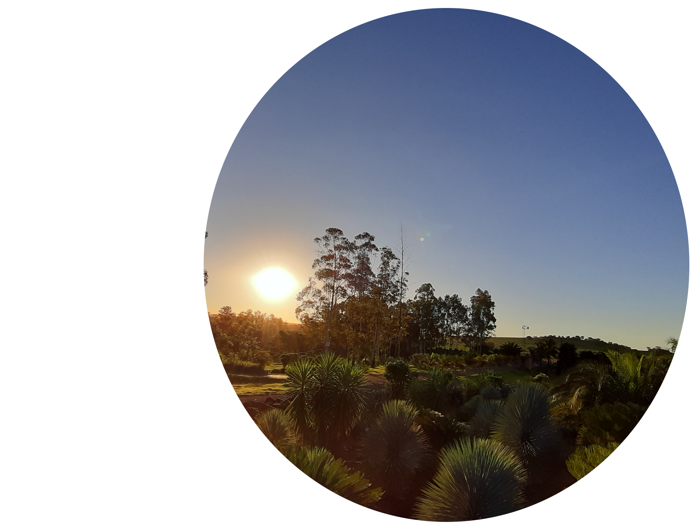
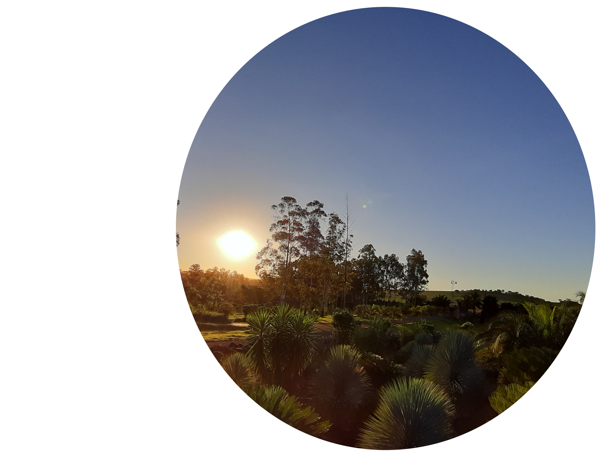

Sobre Mim
Meu nome é Henrique, sou de Rondônia, e estou morando em Toledo-PR há 3 anos. Vim a procura de novas oportunidades, experiências e crescimento pessoal.
Sou apaixonado por tecnologia, áudio, jogos, imagem/fotos. É algo que me cerca desde criança, que sempre me deixou interessado e feliz, e agora recentemente, começou a tomar um rumo em minha vida voltado ao profissional. Estou no primeiro semestre de TSI, devido a pandemia, pois ingressei na UTFPR em fevereiro de 2020, mas venho aprendendo muito e sentindo grande satisfação em tudo que estou conhecendo e aprimorando, é sem dúvidas uma experiência muito boa em minha vida, e que há de me trazer muita felicidade nesses próximos 2 anos e meio de graduação que virão.
Meus maiores hobbies envolvem áudio e jogos. Sempre gostei muito de fones de ouvido, e com muito esforço e trabalho já pude ouvir diversos fones diferentes, com assinaturas sonoras muito específicas, que sempre dão um ar diferente as músicas que gosto de ouvir, e os jogos que gosto de jogar. Já tive desde fones audiófilos chineses (Chi-Fi), a fones que são o estado da arte da engenharia alemã, como os Sennheiser e Beyerdynamic, e sempre aliei esse meu interesse e gosto por áudio de qualidade, à musicas (obviamente) e jogos. Quando comecei a trabalhar com meus 15-16 anos, pude comprar meu primeiro console, um Xbox 360, e desde então, com muito esforço, me mantive na linha de consoles da Microsoft até o mais atual Xbox Series X. Hoje em dia o que mais jogo é Call of Duty: Warzone, com meus amigos, e na vida de multiplayer já fiz dezenas de amizades, de toda parte do Brasil e do mundo, inclusive, meu inglês se aprimorou muito, quando por acaso fiz amizade com um player americano, assim, me ensinando muito de sua língua, sou grato a ele e o que os jogos já me proporcionaram de conhecimento e amizades.
Já trabalhei de barman, caixa, jovem aprendiz e atendente, diversas experiências diferentes, e todas me ensinaram algo pra levar pra vida. Atualmente trabalho de recepcionista no Hospital Bom Jesus, já estou a mais de 2 anos na instituição e apesar de todas as dificuldades cotidianas, principalmente envolvendo o Corona-Vírus, o qual já estou vacinado por ser o primeiro contato com o paciente, gosto muito do meu trabalho e sou feliz com ele. Realizei muitos sonhos materiais devido a ele, e isso me traz muita felicidade.
Minhas projeções de vida pros próximos dez anos, envolve minha graduação, consequentemente um novo trabalho, melhor remunerado, e nessa área que tanto amo e sempre tive afinidade. Também quero minha independência total, ou seja, quero morar sozinho e eventualmente me casar. Nesses planos que faço, quero sempre estar feliz, seja qual for minha condição financeira, emprego etc. Tenho muitos sonhos, mas acredito que devemos ser felizes toda a trajetória de nossa vida, desde a fase difícil, até a fase boa. A vida é pra ser aproveitada por inteiro, não a partir de um determinado momento decisivo, por exemplo, quando você conquistar aquele emprego e carro que tanto quer, por isso comece seus projetos hoje e usufrua de cada momento do processo de aprendizagem e aprimoramento, a felicidade está em nós, e não num único momento que você almeja atingir.

 
